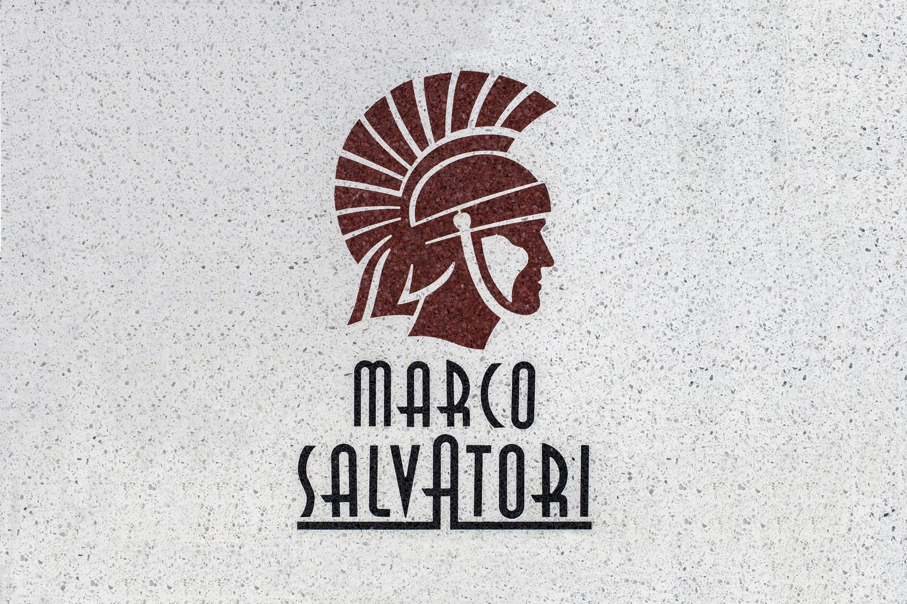

Loggor och konst i terrazzo
Vi kan tillverka er logga i terrazzo enligt era önskemål – inlagd i golvet, utskuren eller som ett eget konstverk.
Urval
Loggor, mönster och motiv
Från företagsloggor i entrégolv till Göteborgs siluett i sten. Klicka för att se bilderna större.
Vill ni ha er logga i terrazzo?
Kontakta oss med logga, mått och plats så berättar vi hur vi kan göra den.